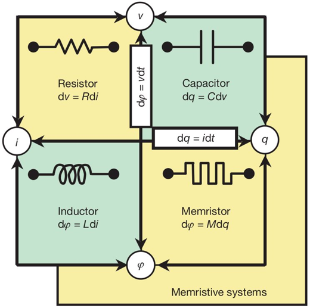
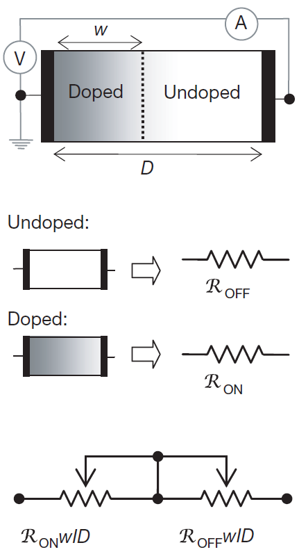
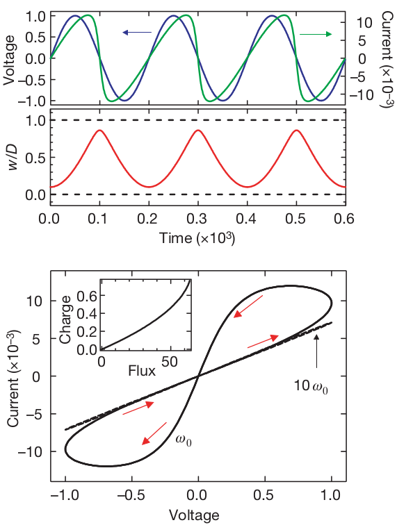
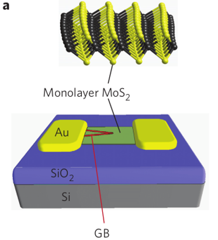
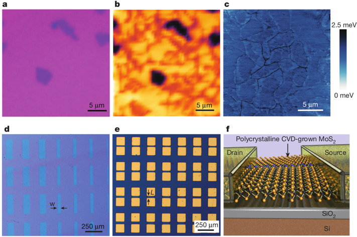
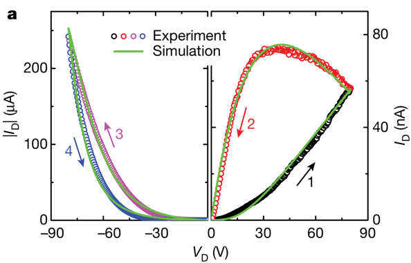
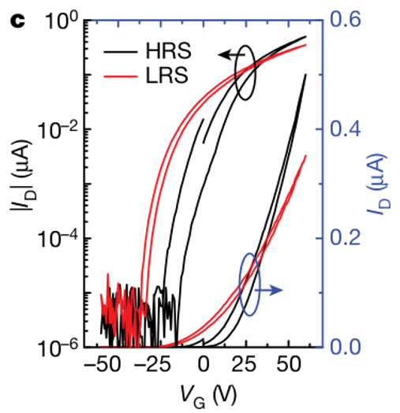
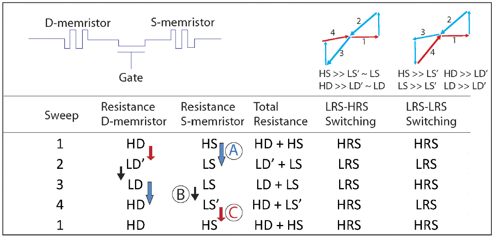
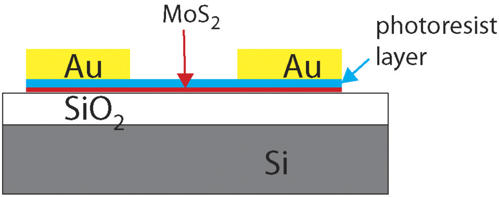

History
In 1971, Leon Chua argued that there should be a fourth basic circuit element, called memristor, which is a passive device that present the relation between magnetic flux $\varphi$ and charge $q$.

Then nearly 40 years people cannot find a physical device that fit in the model that Chua proposed. In 2008, Strukov et al. from HP Labs proposed a physical prototype that have the hysteresis characteristics (current-voltage curve). The basic mathematic definition of the current-controlled memristor is:
$$
\begin{aligned}
& v = R(w, i)i \
& \frac{dw}{dt} = f(w, i)i
\end{aligned}
$$
where w can be a set of state variables and R, f can be explicit functions of time.
The model they proposed is shown as below:

So, base on the model and equations above, the voltage and current relation can be derived as
$$
\begin{aligned}
& v(t) = (R_{on}\frac{w(t)}{D} + R_{off}(1-\frac{w(t)}{D}))i(t) \
& \frac{dw(t)}{dt} = \mu_v\frac{R_{on}}{D}i(t)
\end{aligned}
$$
base on the equations above, the state variable $w$ can be found and memresistance $M$ can also be derived.
$$
\begin{aligned}
& w(t) = \mu_v\frac{R_{on}}q(t) \
& M(q) = R_{off}(1-\frac{\mu_vR_{on}}{D^2}q(t))
\end{aligned}
$$
The following figure shows the electrical characteristics of the proposed memristor.

When a $sin(\omega_0t)$ wave external bias is applied on the memristor and the current-voltage curve of the memristor. As we can see, there are two stage of the memristor, the first one is low-resistance-state(LRS) and the other is high-resistance-state(HRS). This hysteresis characteristic is the fundamental of the memristive devices.
Though people have proposed such devices, the control of these devices is poor. Thus, [Sangwan et al.] proposed a gate-tunable memristor that the set voltage(turn the memristor on) can be modulated by a third gate voltage. They used a monolayer MoS2 and made the memristor a field-effect geometry. The gate doped Si at the bottom shows in the figure below.

Memtransistor
Base on the previous of their own research, Sangwan proposed a new device called memtransistor, which combine both memristor and transistor’s benefits. The figure shows schematic of the memtransistor, there is a doped Si layer in the bottom, followed by a SiO2, then is a monolayer MoS2, then is the electrode. a, b, c are images of the monolayer MoS2. in a, the dark region is the defects (two-layer MoS2). In b, red lines are the grain-boundaries. D shows channels width. And e shows the channel length.

Memtransistor’s Electrical Characteristics
In this figure, $I_d-V_d$ curve is shown. The memtransistor is at $V_g =10V$, $w=100\mu m$ and $L=5\mu m$.
The device shows HRS at $V_d=0V$ and then slowly change to LRS from $V_d=0V$ to $80V$. The device maintains LRS during the sweep from $80V$ to $0V$ (sweep 2). Then the device is reset to HRS from $0V$ to $-80V$, and maintains HRS from $-80V$ to $0V$.
This curve shows that the device act as LRS-HRS memtransistor.
The hysteresis in the $I_d-V_d$ curve of the memtransistor is fundamentally different from the commonly reported hysteresis in the transfer characteristics ($I_d-V_g$ curves) of the field-effect transistors, which are typically due to oxide-related traps.

The $I_d-V_g$ curve of MoS2 memtransistor in the LRS and HRS shows large shit (about 10V) in the threshold voltage, and intersect at $V_g = V_{cross}$.
Compare to the LRS, the HRS shows up to 100 times higher resistance for $V_g < V_{cross}$, and 2 times higher field-effect mobility ($\mu_v$) at $V_g > V_{cross}$.
Therefore, the forward bias switching loop changes from anticlockwise (LRS -> HRS) for $V_g < V_{cross}$ to clockwise (HRS -> LRS) at $V_g > V_{cross}$.

Switching Mechanism
Table showing the resistive switching characteristics of LRS–HRS and LRS–LRS memtransistors at the source and drain contacts during the four stages of a full sweep cycle.

The switching mechanism of MoS2 memtransistors can be understood by assuming two memristors at the source (S-memristor) and the drain (D-memristor) that are connected by a FET. We note that gate-tunable resistive switching cannot be obtained by simply connecting two conventional memristors with a transistor. The Schottky barrier height modulation is closely connected to the operation of the SB-FET in the MoS2 memtransistor. Thus, this distinction between memristor and transistor only serves to specify the switching mechanism. MoS2 memtransistors with residue-free interfaces between the metal and MoS2 undergo HRS-to-LRS switching at positive bias and LRS-to-HRS switching in negative bias and are called LRS–HRS memtransistors here. MoS2 memtransistors with an approximately 1.5-nm-thick polymer tunnel barrier between the metal and MoS2 undergo similar HRS-to-LRS switching at both positive and negative biases and are called LRS–LRS memtransistors. The main difference between the two types is that the LRS–HRS memtransistor retains its state while crossing the $0V$ level, whereas LRS–LRS memtransistors undergo switching while crossing $0V$. Both of these contrasting behaviours can be explained by the resistance table in figure above. HD and LD are the resistance values of the HRS and LRS of the D-memristor, whereas HS and LS are the resistance values of the HRS and LRS of the S-memristor, respectively. We have $HD \gg LD$ and $HS \gg LS$ for both kinds of memtransistors, and their relative amplitudes determine the switching ratio. LD′ and LS′ are intermediate states with resistance values that differ vastly for LRS–HRS and LRS–LRS memtransistors.

For LRS–HRS memtransistors, switching events A and B dominate, while switching event C is negligible. Switching A occurs at the bottleneck contact (that is, the source for forward bias and the drain for reverse bias) while switching B occurs at the other contact in order to restore the dopant distribution at the end of a full sweep cycle. This condition is necessitated by bipolar resistive switching, and its physical origin is well explained by the memtransistor model. Thus, intermediate states LD′ and LS′ have resistance values close to LD and LS, respectively.
On the other hand, for LRS–LRS memtransistors, all switching events A, B and C appear. The resist layer acts at a tunnel barrier that minimizes pinning of the Fermi level of MoS2. Introduction of the tunnel barrier increases the thermionic emission contribution to the total current considerably, outweighing the additional tunnel resistance. Here, a tunnel barrier of about 1.5-nm-thick polymer resist makes the resistances of reverse-biased Schottky diodes at the source ($V_D > 0V$) and drain ($V_D < 0V$) more symmetric, resulting in more symmetric ID–VD compared to LRS–HRS memtransistors. This switching involves a dynamic negative differential resistance feature for $VD < 0V$ common in memristors. This phenomenon increases the resistance of the intermediate states LD′ and LS′ so that $LD′ \gg LD$ and $LS′ \gg LS$.
Advantages and Limitations
- Compare to conventional transistor, memtransistor is able to memory and switch at the same time.
- Compare to memristor, memtransistor provide more terminals which allows more control of the device.
- Fabrication
- Scale